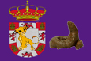
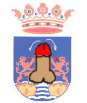
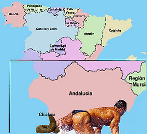

Chiclana de la Frontera
 De: La Frikipedia, la enciclopedia extremadamente seria.
De: La Frikipedia, la enciclopedia extremadamente seria.
| De la serie ciudades del mundo:
|
| Chiclana de la Frontera (o sin ella, como querais)
|
| 
|

|
| (Bandera)
|
(Escudo de armas)
|
|
| Topónimo oficial
|
Shitclana, Skeipá, Segundapista, Er Novo, Jurassic Park.
|
| País
|
Espiña
|
| Código postal
|
3,14
|
| Superficie
|
Recito ferial y regiones colindantes.
|
| Altitud
|
La de los pinos (Cansa mucho subir hasta Santana y medir)
|
| Distancia
|
A partí de Manguita, sigue to recto.
|
| Fundación
|
Antes que Manguita.
|
| Población
|
78.000 animales aproximadamente sin contar cuadrúpedos, ovíparos, bestias silvestres y políticos.
|
| Gentilicio
|
Shiclanero, Pisha, Cohone, Cohehlo ahí, Aaaaaaay, kiyoooooooo!!
|
| Alcalde
|
Er Shefi (más conocido como "Er Peligroso")
|
| Muy bajas, los shitclaneros en su mayoría no estudian.
|
Chiclana de la Frontera es un boquete pueblo con un pasado histórico muy rico, donde muchos "perzonahe" ilustres han cruzado sus calles y han sido cautivados por su gastronoesmía, su cultura, Rancapino y la peste del Rio Iro.
Los Chiclanenses
- Canis:Seres en aumento. No constan de cerebro, se cree que lo perdieron por efecto de los porros. También se les conoce como el eslabón perdido o "el caprichito de Dios"
- Jessis:La hembra del canis. Siempre están pegando gritos para llamar la atención. Son el hogar de muchas enfermedades (reservorio) y tienen la mala costumbre de dar besos.
- Chiclana. Son seres solitarios que solo hablan ñelfico o en su defecto como Chewaka. Te puedes meter con ellos, pero ten cuidado: Son aliados naturales de los jebis, asi que si no quieres que te partan la cara, mejor estate calladito.
- Porretas:su número es directamente proporcional al número de canis, góticos,heavys, punkys, jessies, rokeros y pi. Es posible que tengan cerebro ya que si les preguntas algo lo piensan 3 ó 4 segundos y te dicen ¿qué?. En el caso de que tengan cerebro este está tan colocado que intenta fumarse una zanahoria.
- Salidos: En general lo son todos los frikis, empollones, yo, el que tienes al lado, tu, ya sabes la gente normal.
- Sanfernandenses:Son los p-t-s vecinos de al lado que no hacen más que mirar por encima de la valla para ver que hay en tu casa y luego copiarlo y decir que son los mejores. No confundir con jerezanos.
- Guiris: Son seres que proceden de un mundo mejor, en el que hay seres inteligentes como ratones y/o delfines. Son extremadamente inteligentes, su indumentaria es muy avanzada, consiste en: gorra o visera, para no volverse mas rojos que Falete cuando se le atranca un hueso de pollo en una de sus garganta; camisa de mangas cortas, ¡hombre hace calor!; pantalones cortos, para hacer gala de sus piernas depiladas(cuando tenemos suerte); piernas depiladas, para contrastarlas con sus brazos peludos; calcetines y sandalias, un nuevo avance en la ingeniería ergonómica, las sandalias son cómodas pero no protegen, de ahí los calcetines, te los pones y ya sólo te tienes que preocupar de lavarlos al final del día (cosa que muchos no hacen).
- Gordos: Los gordos son fácilmente reconocibles:son esa cosa que tienes en medio y que no te deja ver a esa tía buena de delante. El debate sobre si son seres vivos sigue abierto.
Los ciclo universal de la materia.
Estas moles de sebo no tienen sentimientos y si los ves llorando es porque quieren que te acerques para arrancarte un brazo(si no tienen mucha hambre) de un mordisco. Posteriormente podrás recuperar el/los miembros perdidos ya que esas cosas descomunales no se molestan en masticar (gastarían demasiada energía en ello).
 Chiclana se sitúa en la punta del
zurullo de Hércules.
- ¡¡¡Peter Griffin!!!: en efecto tenemos al único y original Peter Grifin, tan gordo, subnormal y cabrón como siempre.
- Chulos: Animales que buscan hacerse con una alta posición en la manada. En la época de celo las hormonas de las jessis los enloquecen y les vuelven extremadamente agresivos en su intento por hacerse un harén para darles por el c... ejem ... no apto para menores, niños ya sabéis mirad hacia otra parte hasta los 18(si estáis leyendo esto se os derretirán los ojos y el pene se os pondrá negro y se os caerá( a las niñas les saldrá un pene que sufrirá el mismo proceso)).
- Putas: También conocidas como zorras, golfas, ¡quita!, ¿me das 20 céntimos?,etc...(67,99% de las adolescentes) Si aun no tenéis claro que es una golfa tirad una moneda de 1 euro en el suelo de la cárcel de adolescentes y lo que quede de la matanza sera la "Madame" o en palabras más científicas la gran zorra.
- Empollones: Especie en peligro de extinción que se recluye en los tiempos libres en la biblioteca para evitar la total desaparición, el por qué de la biblioteca es muy sencillo: los canis, chulos y porretas sufren un derrame cerebral antes de terminar de leer la "b" de biblioteca. (la primera B, se entiende)
- Profesores:gente(es un término subjetivo) masoquista que no se preocupa de ir por la calle sin casco. Hay un varias subespecies.
- El profesor porrillero(profesoris porrillerum colocatus): Es el profe que te odia(esto ocurre cuando al camello se le ha acabado la maría, cuando andan emporrillaos son gente enrollada)y le da favoritismo al camello de la clase. Ej:el profesor de filosofía.
- Profesor majareta: Es el profesor que se siente orgulloso de su trabajo y que dan unos pocos gritos de felicidad cada clase. Entre sus armas está la mirada de loco, el libro, las fotocopias, los trabajos, la enciclopedia de la RAE...
- Heavys: Son los únicos con un poco de inteligencia en esta mierda de ciudad, junto con los frikis y yo mismo. Se les reconoce por el pelo XXXL, o sea, que moleste al cagar. No intentes lidiar con ellos porque puedes salir mal aprado, te lo advierto. Pero, si sigues su lema (Vive y deja morir) es una tribu que no busca bronca, e incluso será amiga tuya si no te metes con algún grupo. Vamos, de lo mejorcito que hay.
- Gays: Se fueron todos por culpa de los canis, los chulos y los abusones.Lo tenían muy fácil para encontrar trabajo en series B como el gay que siempre está en medio y gritando como Boris Izaguirre. En cierto modo se perecía a las Jessis. Sólo quedan Gays reprimidos.
- Gays reprimidos: Son aquellos Gays que guardan las apariencias para que no les peguen.Esto funciona en un 0% de los casos.
- Goticos: Gente (de manera considerable) rara que no se lava la ropa, ni el pelo, ni las uñas.Hay que tener cuidado con ellos porque muerden, como los Heavys. Se diferencian de estos últimos en que estos no dan un palo en la vida. De manera excepcional cuando hacen algo o se fuman un porrillo o se quejan de la mierda de vida que tienen (palabras literales).
- jilis de cuidao!
- Pajilleros MAXIMUS:yo, mi, me, conmigo, el, su, se, consigo,etc...
Religión
Chiclana es un agujero infecto con una cultura politeista. Ya que sus habitantes son incapaces de pensar por si mismos (no piensan),dejan que otros seres superiores piensen por ellos. Entre sus deidades están:
- JUANFRAN:queda demostrado por esta fórmula:Dios es cabrón, JUANFRAN es profesor de matemáticas B, profesor de matemáticas es igual a cabrón, JUANFRAN es cabrón, por lo tanto JUANFRAN es Dios.
- El Farruquito:este es maestro de matemáticas, pero como si no lo fuera, simplemente es cabrón.
- YO: me rigo por los métodos anteriores, soy cabrón, me gustan las matemáticas, escribo en la friki, la gente me odia, soy Dios, pero como soy menor de edad no soy un JUANFRAN (perdoname señor por haber intentado equipararme a usted)
SEN cuadrado Alfa + COS cuadrado Alfa = 1 ¡Salve JUANFRAN!
- El De Sociales:no lo tengo muy claro pero al parecer es un tío misterioso que se presenta en tu clase sin que lo invites y se pone a hablar de cosas aburridas que no te servirán de nada en la vida pero que pueden hacer que repitas. Por la fórmula es tambien un Dios. También le gusta gritar la palabra Maquiavelo y "no tiene escrúpulos".
¡MUCHÍSIMO CUIDADO CON EL! si escribes "clase social" en un tema del siglo XVII te suspende.
- Jesu Cristo: un tío con pinta de guiri que tuvo mucha suerte y vivió una vida de cojones sin dar un palo al agua. Se estima que fuera el punto donde se separaron los jevis (pelo largo y demás jilipolleces) de los góticos (fumaporros enfermizos que no hacen nada en la vida)
Al menda este le encantaban las fiestas y esto queda demostrado en que en las iglesias te dan vino y esa es la sangre del jodío, para acompañar te dan una lays y te dicen que es el cuerpo de Cristo, eso si sólo te dan una que no estamos para gastar.
Fiestas
Chiclana posee las típicas fiestas en que las mozas pierden la virginidad(las pocas que aun la conservan)
- La jilis presumen de haber gastado el dinero para montar en ellas, gente vomitando o meando, gente conocida a la que intentas esquivar para que no te den por culo, a mi no me veréis y por supuesto los típicos usureros de estas tradiciones que te cobran un riñón para poder jugar en los puestos (que están más amañados que el pressing catch).
Autor(es):
- Nexo
- Fordus
- Chiclanero
- Azulejos
- El Sevillano
- Armagedon19-7-12
- Kohone
- ArreKarallo
- Pochi
- Kevrochi
Frikipedia 2005-2016, Licencia
GFDL 1.2 - Extraído por FrikiLeaks